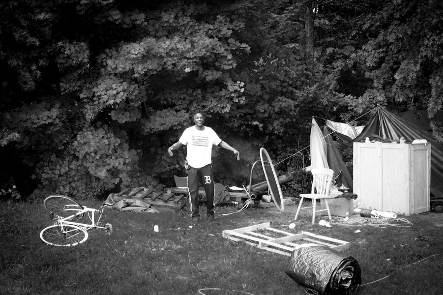

Timeline photos
This is Ricky. He and 4 other homeless people (all black) have been overlooked by @[103601489691547:274:Community Support Services] for hotel vouchers. They were all told to go to The Haven.
Ricky won't go because he does not agree with the religious requirements in order to eat each meal and sleep. He also needs to keep in contact with his family and they force him to store his phone in an unsecured bin from when lights out happens at 8pm to 6am (lights out at Summit County Jail is 10pm).
The city is scheduled to sweep his camp today. They are not here yet. He's incredibly afraid of not knowing when the inevitable eradication will happen. He has nowhere to go and no way of taking any of his belongings to where ever he might find to sleep.
This is cruel and inhumane punishment placed on African Americans that have done nothing wrong other than fallen on hard times.
Homelessness is a highly traumatic experience. The city of Akron and the homeless service providers are compounding that trauma. We treat dogs better than we treat these American citizens.
Place: Grace Park (41.084857152547, -81.508680369615)
Address: Akron, OH 44304